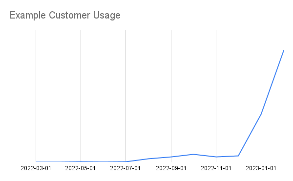

SaaS Go-to-Market#
Where are we on product and GTM? What are some open questions and what should we do to improve?
This article gives a snapshot of where Coiled (Dask company) is on product development and sales and marketing / Go-to-Market (GTM). It’s mostly written with internal audience in mind, but should also be helpful for other early stage tech/SaaS companies as an example.
Summary#
Our product is now good enough that when people try it, they like it, eventually use more, and pay us real amounts of money. üéâ
But we don‚Äôt have many of these customers. üòî
How do we get more? ü§î
How did we get into this situation? What should we do from here?
History#
For the first couple years of the company, the product kinda sucked. That’s ok! We were still a baby company learning how to walk. At the time we also had a mature sales organization that did its best to sell this kinda-sucky product. This was inefficient and frustrating for all involved.
In May of last year we let go of the sales team, and a couple months later we let go of the the folks in marketing who owned voice/messaging (this wasn’t particularly strong either). We became very engineering-forward as a company. The platform team became staffed only by very senior engineers who had full agency.
This was great! Our product evolved quickly, our Twitter account stopped sounding spammy, and our website started to make sense!
What’s more, platform users started to use us more, and became happier. Usage ticked up a couple months later and really started to take off recently as we spread within organizations.
Whereas previously we were unbalanced with a bad product and good sales, now we have a good product and relatively little sales experience in the company. What should we do? Try to go back to our previous state? Maybe / maybe not. Let’s explore our options.
Customer Profile#
The kind of GTM engine we build depends on the market that we’re going after. This affects how we market ourselves, how we price the product, and what kind of sales team we build:
What choices do we have? Mostly we break down this choice by company/team size:
Individuals: we target individual data professionals to use our platform, kinda like Github does
Marketing: highly technical online content, maybe some events, focusing on ease of use and accelerating work
Pricing: mostly free with a possibility of swiping a credit card for up to a few hundred dollars a month (typically the budget for individual data professionals)
Sales: no sales team, must be self-serve (we can’t hand-hold individuals, and sales teams will want commissions)
Small teams: we serve small teams of data professionals, talking mostly to the team lead, who cares mostly about getting work done, but also has to justify costs
Marketing: a mix of highly technical content with some business value thrown in as well
Pricing: free tier is useful for trials, but we expect to charge a few thousand a month, either with a corporate card or with a purchase order (typically the budget for a team lead without getting higher approval)
Sales: maybe rely on a self-serve motion to get people in the door, and then try to sell them to pre-commit to greater usage with discounted rates. This requires a lightweight sales team attached to a product that can sell itself.
Enterprise: we target entire companies, probably talking to some IT architect, or a CTO. They care about accelerating the company, and also about costs, security, and generally not causing a panic.
Marketing: focus on business value with a simpler technical message. Some online content but direct outreach.
Pricing: $100,000-$1,000,000s, probably after a POC and with some healthy support contract thrown in
Sales: this is a high contact sales process that takes many months. This requires a sizable and expensive team working full time on chasing down new deals and working those deals to completion.
As a company we could play at any of these levels. Dask has great community adoption and could leverage those users into a strong individual userbase (like GitHub). Alternatively, we’re also heavily used inside of large organizations (banks, government, healthcare, etc.) that are used to paying millions of dollars for a product like ours, and so an Enterprise play could also make sense.
Which market we go after affects our choices about sales and marketing. What do we choose?
Most of the money is in large enterprise sales. It’s hard to find a company in our space (data infrastructure) bringing in hundreds of millions of dollars where most of that money doesn’t come from large enterprise contracts. We have a few of these already, mostly focused around Dask support, and we like them.
However, selling into these companies has a long lead time, long iteration cycles, and poor visibility/learning due to stringent security. For this reason, we’ve focused on the less lucrative, but more informative individual and small teams groups. This allows us to focus on a cloud SaaS product, which gives us a lot of visibility into usage, which we leverage to accelerate product velocity.
Our thesis is that by starting with small teams we can more rapidly iterate towards a delightful experience, which we can then pivot to larger enterprise for real money. Will that work? ü§∑ I think so?
What team is best?#
Given this focus on individuals and small teams, what kind of GTM team do we need? Our previous sales team had SDRs, account executives, sales engineers, customer support, customer success managers, and more. This team made lots of sense for a large enterprise sales motion, but it may not make as much sense for individuals (no sense) and small teams (maybe some sense).
What did we like about our old team?#
Outreach: They reached out directly to potential customers
Our marketing at the time was not good (it’s still not good). Lots of people said “Of course we love Dask, but who’s Coiled?”. The sales team, through direct outreach, was able to shore us up a bit here.
This feels like a bandaid though. Our marketing should be doing outreach for us.
Explanation: They explained our product to customers
Same as above, we didn’t describe ourselves well, and so prospects had a bunch of questions like “do you deploy in my cloud”, “are you secure”, “how does this compare to Databricks?”, and “how much will this cost me?” which our sales representatives were able to answer and bring people in.
Onboarding: They helped customers onboard to the platform
The platform had issues, and the sales engineers were able to set things up for the customers so that they could onboard and actually use the product.
This is mostly handled today with the product (it’s much better) or with light touches from the engineering team itself. I think that it’s good for the engineers to have this direct access. I don’t think that I would want to change this today.
Customer Success: They helped customers use the platform to solve business problems
Once the platform is running well for the customer, and they start really banging away with Dask, they eventually run into some problem with Dask or the PyData system generally.
We don’t have a good answer for this today, and could become better. Our OSS Dask engineers are asking for more customer exposure, and this could be a good fit, as long as we figure out how to make it informative rather than distracting, which is hard.
Tracking: They were organized about all of the prospects and customers and who needed what to move along
There are lots of people using this platform, and we’re not mature enough where everyone gets to their ideal state (using us as much as possible as efficiently as possible) without help (really, no product is this mature). The sales team was somewhat organized here.
We don’t have a good solution for this today.
Closing: They navigated organizations to find buyers
When an individual without purchasing power arrives, the sales team was good at saying “Do you have the ability to buy our product? No? Who does? Can I ask you to set up an introduction?” and then once the sale was complete they helped to hound the customer’s internal bureaucracy to make sure that money flowed through.
This is less important for small team sales than for enterprise customers, but there is still non-trivial value. Today I / our director of finance does this. It’s been ok but not great.
Focus on Marketing#
A lot of the tasks above should have been automated (outreach, explanation, onboarding), but they weren’t. We used people/conversations as a replacement for technology/writing.
Mostly, we lacked a strong product marketing function and made up for it with a lot of hands-on outreach and explaining. I’m entirely in-favor of doing hands-on work to learn, but we didn’t then translate those learnings into long-term assets that help everyone understand the value that we provide without having to tell them one-by-one.
Because of this experience, this time around I’d like to focus on on product marketing, this includes assets like …
Architecture diagrams / videos
Build vs buy comparisons in a few common situations (individual, small team, larger more active team) and how we’re always the better choice
Our Security model and FAQ about data privacy
Common use cases
Even if we were to hire out a sales leader for more outreach/tracking/closing I’d want to have these things first. Otherwise I think our newly hired sales leader would be be spinning their wheels (and those are very expensive wheels).
Question: self-serve or direct sales?#
I like the idea of self-serve. The story goes like this, a user …:
Learns about our product
Uses our product for free and loves it
Uses it enough to start paying money and can do that easily in the product with a credit card
Uses it even more, to the extent where they need to get authorization and have an actual conversation
Examples of this motion include GitHub, AWS, and Atlassian. It’s great because you can focus on building an amazing user experience, rather than focusing all of your energy and money on sales.
In principle this sounds great! It speaks to my inner-engineer and community-oriented mindset. However, almost no company in our space makes most of their money this way. Most companies do direct outreach and sell a complete package to companies from the start. The self-serve nature of the product ends up being useful for companies to quickly do proof-of-concept (POC) work, and for students, but that’s it.
Self-serve feels right, but imprudent. This is still an open question for me.
Question: Straight to Enterprise?#
Big companies use Dask. We’re not like other early stage tech companies that are trying to get their name out there. We regularly turn away big companies with lots of cash looking for a self-managed Dask management platform. Maybe we should stop turning them away, and instead lean into this?
This goes against the common wisdom of the day which says “go cloud”, “go broad”, and “go managed” which, from a learning and velocity perspective, I like. But it does with the timeless wisdom of “go where the money is”.
I intend to stay with Cloud SaaS, which kind of precludes Enterprise until we get a lot more mature / trusted. However we’ll experiment with deploying our platform in a self-managed way in a couple of friendly customers to see what the experience is like. This is an experiment and a distraction from focus, but I think a good one if we can do it well with the right partners.
Who to hire?#
Right now three of us in the company think broadly about the entire GTM strategy:
me
product owner / engineering manager
finance director
It’s good for the three of us to have this exposure (it informs how we do our normal jobs) but we’re all also pretty busy, and so are doing a suboptimal job of the GTM work.
I think I want to hire a single high performing individual who can flex between product marketing and some salesmanship, as well as be organized and creative. Over time, once they’re successful, they’ll hire a team around them.
How do we find such a wonderful person? Classic sales roles are typically not sufficiently technical for a product like ours, and they tend to be a bit more mechanical. Classic marketers tend to be creative, but lack the technical and sales experience. Maybe a product marketing manager or a product manager? Our ideal GTM role doesn’t fit into any traditional job description. Probably I’m looking for someone who has done a couple of these jobs, and is used to early stage thinking.
Right now I’m talking to lots of people. Do you know of someone like this? Please put us in touch!
Edit: Update#
Currently we’re hypothesizing that we want a single strong performer who is comfortable doing the following activities starting out:
Social: Talk to lots of prospects, understand their pain and questions
Technically Conversant: need to be able to speak the language and empathize with our current highly technical users
Good Writer: Ensure that we have good answers, and that we have good broadcast materials to answer those questions
Creative and Hungry: Try out a bunch of hacky experiments
Organized: Follow up with prospects
Motivated: Close relatively small deals (we’ve found that this is pretty easy once they’re using the product, which has a generous free tier)
Once this works they’ll then need to hire people to do more of this, and empower them appropriately. This usually means that they’re years but not decades into their career.
We’re guessing that this comes from one of a couple possible profiles:
Extrovert engineer: comes from a background sales/field engineering, customer success, or product management. They used to be highly technical, but are now as curious about building a sales and marketing motion as about core technology.
Technical Inside Sales Leader: they started out in inside sales for a related highly technical product (like Databricks). They succeeded by understanding and caring about their product.
We want someone who is conversant in our space (ramp up time is too long here). They don’t need to be a hardcore distributed systems engineer, but should, for example, be comfortable talking about the relative merits of various file storage solutions (parquet, deltalake, snowflake) and knock beers together while griping about Kubernetes / cloud deployment pain (even if they don’t have hands on experience there).
If you know or are such a person then please get in touch.